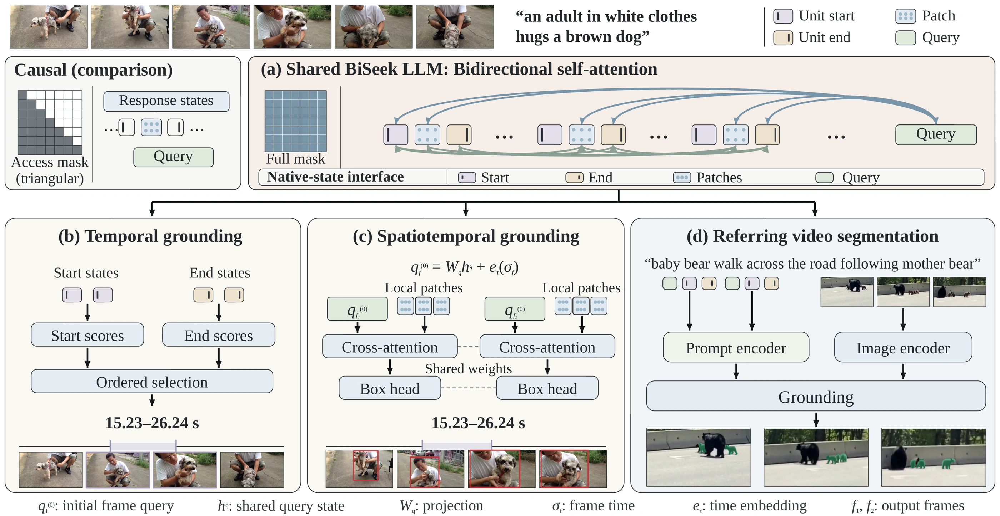
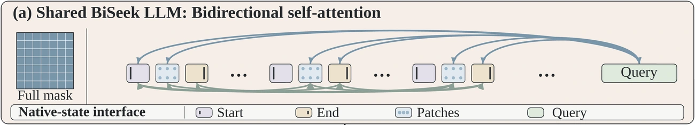

Select a frame to inspect its position in each interval.
Intervals use continuous clip-relative seconds. The benchmark applies TimeLens endpoint rounding.
Repurposing Generative Video–Language Models for Fine-Grained Perception
BiSeek reads a video and its referring query together to locate an event, track an object or segment a target.
1 Harbin Institute of Technology, Shenzhen2 Alibaba3 Hainan University4 Peng Cheng Laboratory5 Pazhou Lab6 University of California, Merced* Corresponding authors
Prediction gallery
Compare model outputs on the same six sampled frames for each query.
Select a frame to inspect its position in each interval.
Intervals use continuous clip-relative seconds. The benchmark applies TimeLens endpoint rounding.
3:06 · English narration and captions
Method
Each valid video and query position can attend to the full input. Three readouts reuse the resulting video–query encoding.


Bidirectional attention lets native frame boundaries and patches incorporate the referring query before any readout.
Attention study
Query-to-patch attention at layer 14, averaged over 16 heads and shown on a shared scale. The two 2B variants also differ in readout conditions and training history.
Benchmarks
Explore the metrics and comparison methods for each dataset and split in the paper and appendix.
Scores are percentages. An em dash indicates an unreported metric. Bold values lead the methods listed in that column.
BiSeek-2B ablations
Citation
@misc{miao2026biseek,
title = {BiSeek: Repurposing Generative Video-Language Models for Fine-Grained Perception},
author = {Deshui Miao and Wenzhao Gao and Xingsen Huang and Xin Li and Haijun Zhang and Ming-Hsuan Yang},
year = {2026}
}